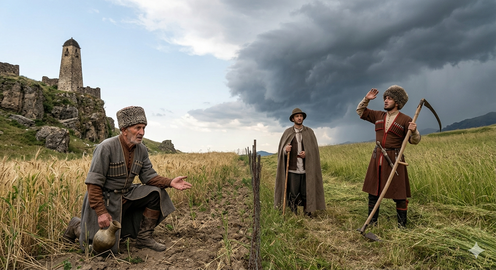

И.А. Дахкильгов. Хьехаме дувцарш - поучительные рассказы-притчи.
И.А. Дахкильгов. Хьехаме дувцарш - поучительные рассказы-притчи. Из ингушского фольклора.

Массанена товр дулургдац
Адама куц тӀа а ийца, дуненна гӀолла доладенна даха хиннад Джабраил-малейк. Наха фу леладу, цар хьал мишта да хьажа дага долаш леаш хиннад. Кхай тӀа воаллаш ахархо бӀаргавейнав цунна. - Даллас хьайна жоп луш хилча, цунгара фу дехаргдар Ӏа? - хаьттад малейко. - ДогӀа дехаргдар аз, ер дӀадийна кӀа хьийкъа сай хургдолаш, - аьнна жоп деннад. Йоачан тӀайийхай Джабраил-малейко. Морхаш Ӏовш хиннай ер цхьан мангалхочоа тӀаккхачача. Цунга а хаьттад: - Жоп луш хилча, Даллагара фу дехаргдар Ӏа? - ДӀа-а йоагӀа охкаенна морхаш гой хьона? ДогӀана йоагӀа уж. ЧӀоагӀа екханга сатувсаш ва со, кхы а йоккха цон йисай са хьакха езаш, - аьннад мангалхочо. - Массанена товр де Даллана шийна а могаргдац, - аьнна, Джабраил-малейк сигала хьалдахад.
РУССКИЙ
Даже Бог не сможет угодить всем
Ангел Джабраил сошел на землю. В облике простого смертного стал он ходить повсюду и наблюдать за людьми. Увидел он какого-то крестьянина и спросил его: - Если бы можно было, чего ты попросил бы у бога? - Я попросил бы дождя, - ответил крестьянин, - тогда у меня вырос бы хороший урожай пшеницы. Попросив у бога дождя, ангел пошел далее. Увидел он другого горца. И ему он задал тот же вопрос. Горец ответил: - Я только что приступил к косьбе, и мне надо скосить весь этот большой луг. Но вот беда, во-он движется большая черная туча. Дождь мне помешает. Я попросил бы у бога солнечной погоды. - На всех не угодить даже самому богу, - сказал ангел и вознесся на небо.
ENGLISH
Not even God can please everyone
The angel Jibrail descended to earth. Disguised as an ordinary mortal, he wandered far and wide, observing people. He came across a peasant and asked him: 'If you could, what would you ask of God?' 'I would ask for rain,' replied the peasant, 'then I would have a good wheat harvest.' Having asked God for rain, the angel went on his way. He saw another highlander and asked him the same question. The highlander replied: 'I've only just started mowing, and I need to mow this whole large meadow. But here's the trouble: a big black cloud is moving over there. The rain will get in my way.' I would ask God for sunny weather. 'Even God himself cannot please everyone,' said the angel, and ascended to heaven.
НОХЧИЙН
ПОГОВОРКИ
Ахорхо екханга хьеж. Пазарь всегда ждет хорошей погоды.Болх бечоа ди лоаца хет, мекъачоа из дӀаьха хет. Для работающего день короток, а для лентяя долог.БӀаьстан дено Ӏана бутт кхоаб. Весенний день зимний месяц кормит.Ды массаз къувкъа делхац догӀа. Не всегда идет дождь, когда гром гремит.Екхан йолча хана йоачанга хьеж; йоачан хилча, екханга сатувс. В засушливое время дождя ждут, а в дождливое – о солнце мечтают.Йоачан а дика я йокъала тӀехьа йоагӀаш, екхан а дика я йоачана тӀехьайоагӀаш. Дождливая погода хороша, когда идет вслед за засухой; солнечная погода хороша, когда она идет вслед за дождливой.Кхай тӀара болх – сагагара, догӀа дайтар – Даллагара. Труд на поле – от человека, дождь с неба – от бога Дялы.Малх хьахьежача, бутт бов: бутт хьежача, седкъа бов. Солнце выглянет – луна исчезает; выглянет луна – исчезает звезда.Массаненна мел товр дала Даллана шийна а метадац. Удовлетворить желания всех не смог даже сам бог Дяла.“МоллагӀа хӀама хувца кара да са, бакъда цхьан сага оамал хувца магац сона”, - аьннад йоах Далла. Говорят, бог Дяла сказал: “Я могу изменить все, кроме характера одного-единственного, любого, человека”.Ӏай буц яьлац, аьхки лоа диллац, - массадолча хӀаманна ший ха я. Зимой трава не растет, летом снег не идет – всему свое время.Ӏан хозал (эздел) - йӀовхал я. Благородство (красоты) зимы – быть теплой.